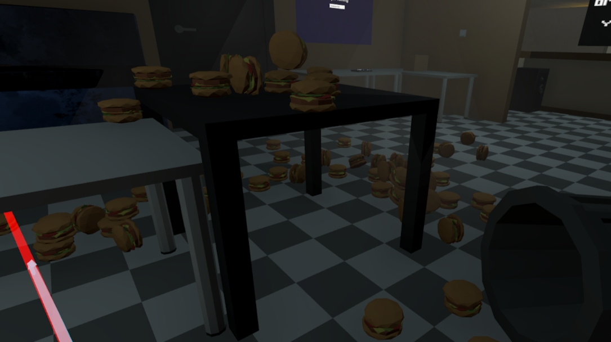

Capstone Project (Big Greasy)
Unity - C# | XR/VR
List of Contributions:

Level Design of the Game
Specific Contribution Details Explained Here
- When coming up with the game, I was exploring how the player should be interacting with the work along with opions
- Contribution Explained 2
- Contribution Explained 3

UI Developer
Specific Contribution Details Explained Here
- I worked on the interactions between the player and the world. Coming up with how to go about it was a bit tricky because I didn't want to follow the typical way of having a function in update looking every frame for a interaction so I made a interface that would called
- I worked on the UI that would pop up in game and give information to the player based on what they could interact with.
- The UI I worked on for the Rat Race was probably the work I'm proud about because the interactions and working between the timer to function was a bit tricky.The organization of the was a bit tricky between having a UI Manager talk to the RaceTrack script that determines the when the races starts and who wins, and the RatMenu script that decreases money and decides how much money it gives the player.